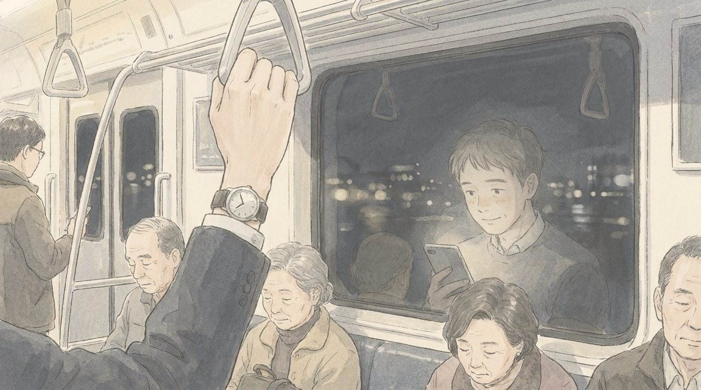

화요일 오후 4시 반. 회의 30분 전이었다.
나서현이 스마트폰을 들고 이우진의 자리로 왔다.
"과장님, 회의 전에 이거 한번 보세요. 인도네시아 사람들이 화장품 어떻게 사는지."
화면에는 짧은 영상이 이어서 재생되고 있었다. 자카르타의 인플루언서가 휴대폰 카메라 앞에서 크림을 바르며 실시간 방송을 했다. 화면 아래로 인도네시아어 댓글이 쏟아지고, 한쪽에서 '지금 구매' 버튼이 깜빡였다. 영상 하나에 수천 명이 동시에 보고 있었다.
"이게 다 소다랩이랑 민트앤이에요. 방송 중에 바로 사요. 결제까지 두 번."
"두 번?"
"네. 우리 몰은 아홉 번이었잖아요. 지금 다섯 번이고."
소다랩은 창업 5년 만에 청연의 수결을 해외 매출로 따라잡았다. 민트앤과 데이브리즈는 그 뒤를 바짝 쫓는 두 곳이었다. 셋 다 이름부터 가볍고 상쾌했다. 청연의 브랜드들처럼 한자 두 글자에 무게를 싣지 않았다.
이우진은 영상을 오래 봤다. 그리고 물었다.
"본사에서 이 앱 써 본 사람 있을까?"
나서현은 잠시 생각하다가 대답했다.
"과장님이 첫 번째일 것 같은데요. 방금."
화요일 오후 5시. 자카르타는 오후 3시, 싱가포르는 오후 4시였다.
본사 회의실 화면에는 사람이 여섯 명 있었다. 경영기획팀 성동민 차장, 해외사업팀 임소연 과장과 류재민 대리, 온라인기획파트의 한지석과 이우진. 권재혁은 다른 회의에 들어가 있었다. 회의록은 이번에도 이우진의 몫이었다.
성동민은 서른아홉 살이었다. 경영기획에서 해외 법인 실적을 8년째 관리해 온 사람. 말이 빠르고, 보고서 문장이 깔끔했다. 임소연은 인도네시아 담당 7년차 과장이었다. 자카르타 주재원으로 2년을 살다 온 사람이라, 현지 사정은 본사에서 그녀가 가장 잘 알았다. 류재민은 입사 3년차 대리로, 회의 내내 엑셀 창을 띄워 놓고 숫자를 받아 적었다.
화면 오른쪽 위에는 싱가포르 아시아태평양 지역본부의 대니얼 탄(Daniel Tan)이 있었다. 지역본부 이커머스 디렉터. 마흔다섯 살의 화교계 싱가포르인으로, 동남아 여섯 개 나라의 온라인 매출을 한 화면에 놓고 보는 사람이었다.
그리고 화면 가운데에 자카르타 법인의 아유 레스타리(Ayu Lestari)가 떴다. 청연 인도네시아 법인 이커머스 매니저. 서른한 살. 히잡을 단정히 두르고 있었고, 뒤로는 창고처럼 보이는 사무실 벽이 보였다. 벽에 붙은 청연 포스터는 한쪽 모서리가 떨어져 말려 있었다.
토요일 회의에서 문혜경 사장이 던진 질문이 이 회의의 시작이었다. '북미는 되는데 동남아는 왜 안 됩니까.' 해외사업팀은 그 질문의 답을 인도네시아에서 찾기로 했다. 인구 약 2억 7천만 명, 세계 4위의 인구 대국. 국민 열에 여덟 이상이 무슬림인 세계 최대의 이슬람 국가. 2019년부터 할랄 제품 보장법이 시행돼, 화장품도 몇 년 안에 할랄 인증이 의무가 될 예정이었다. 평균 나이 서른 안팎의 젊은 나라에서, 한국 드라마와 K-뷰티가 막 폭발하던 시장이었다. 그런데 청연의 매출은 그 열기를 따라가지 못하고 있었다.
"Ayu, could you walk us through the marketplace first?"
성동민이 영어로 말했다. 발음이 매끄러웠다.
아유가 화면을 공유했다. 인도네시아 최대 온라인 마켓플레이스의 검색 결과였다. 검색어는 '한국 수분 크림'.
첫 줄에 청연은 없었다. 둘째 줄에도 없었다. 소다랩, 민트앤, 데이브리즈가 먼저 떴다. 가격은 청연의 3분의 2. 별점은 4.8. 리뷰는 수만 개. 그리고 '내일 도착' 배지.
청연의 수결 크림은 스크롤을 네 번 내리고 나서야 나왔다. 별점 4.5, 리뷰는 수백 개. 배송은 '7~10일'.
"Our products come from Korea by sea. SODA LAB keeps stock in a local warehouse here in Jakarta. So they deliver tomorrow."
(우리 제품은 한국에서 배로 들어옵니다. 소다랩은 여기 자카르타의 현지 창고에 재고를 미리 넣어 둡니다. 그래서 다음 날 도착합니다.)
아유의 영어는 또박또박했다. 현장 사람의 영어였다. 꾸밈이 없었다.
"And this is our product page."
(그리고 이건 저희 상세페이지입니다.)
화면이 바뀌었다. 수결 크림의 상세페이지. 이우진은 눈을 가늘게 떴다. 한국어로 된 이미지 위에 영어 번역이 작은 글씨로 붙어 있었다. 인도네시아어는 없었다.
"We use the images made in Seoul as they are. To translate them into Bahasa Indonesia, we need approval from headquarters. We asked four months ago."
(서울에서 만든 이미지를 그대로 씁니다. 인도네시아어로 바꾸려면 본사 승인이 필요한데, 요청한 지 4개월 됐습니다.)
"그건 제가 확인해 보겠습니다."
성동민이 말했다. 그리고 바로 다음 문장을 이었다.
"그런데 아유 매니저, 결국 핵심은 노출 아닙니까? 검색 첫 페이지에 안 뜨면 아무리 상세페이지를 잘 만들어도 소용없잖아요. 광고비를 더 쓰는 방향으로 검토해 보시죠. 예산은 본사에서 조정해 드릴 수 있습니다."
류재민이 그 말을 영어로 옮겼다. 아유는 잠시 말이 없었다. 화면 속 그녀의 눈이 아주 조금 커졌다가 원래대로 돌아왔다.
"We already doubled the ad budget last quarter. Traffic went up, but people come in and leave. They leave when they see seven days of shipping. They leave when they see no Bahasa."
(광고비는 지난 분기에 이미 두 배로 늘렸습니다. 유입은 늘었지만, 사람들이 들어왔다가 나갑니다. 배송 7일을 보고 나가고, 인도네시아어가 없는 걸 보고 나갑니다.)
"그러면 광고 소재를 바꿔 보는 건 어떨까요. 현지 인플루언서를 쓰든지."
"Influencers won't take our products."
(인플루언서들이 저희 제품을 받지 않습니다.)
"왜요?"
"Because we have no answer on halal certification. I sent the question to headquarters three weeks ago. No reply yet."
(할랄 인증 문의에 답이 없어서요. 3주 전에 본사로 질문을 보냈는데, 아직 답을 못 받았습니다.)
임소연이 고개를 들었다. 그녀가 짧게 덧붙였다.
"인도네시아는 무슬림 인구가 가장 많은 나라예요. 화장품도 할랄 인증이 없으면 앞으로 큰 유통 채널에 들어가기 점점 어려워질 거라는 얘기가 현지에 계속 돌고 있습니다. 인플루언서들이 조심하는 게 당연해요."
이우진은 받아 적었다. 3주. 할랄. 답 없음. 그리고 성동민의 얼굴을 봤다. 처음 듣는 이야기라는 얼굴이었다.
"그건 제가 품질 쪽에 확인해 보겠습니다. 그래도 단기적으로는 광고 효율을 올리는 게..."
그때 싱가포르의 대니얼 탄이 처음으로 마이크를 켰다.
"From the regional view, Indonesia is the biggest opportunity we have in Southeast Asia. But my budget covers six countries. If Indonesia needs a local warehouse and halal, that is not an ad problem. That is a headquarters decision."
(지역본부 입장에서 보면, 인도네시아는 동남아에서 우리가 가진 가장 큰 기회입니다. 하지만 제 예산은 여섯 나라 몫입니다. 인도네시아에 현지 창고와 할랄 인증이 필요하다면, 그건 광고 문제가 아닙니다. 본사가 결정할 문제입니다.)
회의실이 잠깐 조용해졌다. 대니얼은 공을 정확히 서울로 돌려보냈다. 성동민은 넥타이를 한 번 만졌다.
"검토해서 다음 주에 회신드리겠습니다."
성동민은 그 뒤로도 두 번 더 광고비 이야기를 했다. 아유는 두 번 더 배송과 언어와 할랄 이야기를 했다. 두 사람은 같은 화면을 보고 있었지만, 서로 다른 회사에서 일하는 사람들 같았다.
한지석이 처음으로 끼어들었다.
"Ayu, how do SODA LAB and MINT& run their local warehouses? Do they do it themselves?"
"No. They outsource to local logistics companies. Some of those brands have only three or four people here. But they decide fast. In one day."
(아뇨. 현지 물류 업체에 맡깁니다. 여기 직원이 서너 명뿐인 곳도 있어요. 대신 결정이 빠릅니다. 하루면 정해요.)
하루. 이우진은 그 단어 옆에 밑줄을 그었다. 회의록 v1.0에서 v7.0까지 사흘이 걸렸던 회사가 있었다.
회의는 6시 10분에 끝났다. 성동민이 마무리했다.
"오늘 논의된 내용은 광고 효율화 방안을 중심으로 정리해서 공유드리겠습니다. 수고하셨습니다."
화면이 하나씩 꺼졌다. 성동민, 대니얼 탄, 해외사업팀, 한지석. 이우진도 종료 버튼을 누르려다 멈췄다. 아유가 아직 화면에 남아 있었다. 그녀가 그를 보고 있었다.
"Excuse me. Are you the one writing the minutes?"
(실례지만, 회의록 쓰시는 분이세요?)
"Yes. I'm Woojin Lee."
(네. 이우진입니다.)
"Woojin."
아유는 그의 이름을 천천히 발음했다.
"Please write what I said. Not what they wanted to hear."
(제가 한 말을 써 주세요. 그분들이 듣고 싶었던 말 말고요.)
이우진은 대답하지 못했다. 그녀는 작게 웃었다. 지친 사람의 웃음이었다.
"Last time, the minutes said, 'The Indonesia team will improve ad efficiency.' I never said that. So nobody solved the shipping problem. Nobody answered the halal question. For six months."
(지난번 회의록에는 '인도네시아 팀이 광고 효율을 개선하기로 함'이라고 적혀 있었어요. 저는 그런 말을 한 적이 없어요. 그래서 아무도 배송 문제를 풀지 않았고, 아무도 할랄 질문에 답하지 않았어요. 6개월 동안요.)
"...I understand."
(...알겠습니다.)
"Thank you, Woojin."
(고마워요, 우진.)
화면이 꺼졌다. 회의실에 혼자 남은 이우진은 노트북의 검은 화면에 비친 자기 얼굴을 봤다.
저녁 8시. 그는 회의록을 썼다.
'1. 현지 배송 7~10일 (소다랩·민트앤은 자카르타 현지 창고 활용, 익일 배송)
2. 상세페이지 인도네시아어 변환 요청, 본사 승인 4개월째 대기
3. 할랄 인증 문의, 본사 답변 3주째 없음 → 현지 인플루언서 협업 불가
4. 광고비 지난 분기 2배 증액, 유입 증가했으나 이탈 지속
5. (지역본부) 현지 창고·할랄 인증은 본사 결정 사항
6. (경영기획) 광고 효율화 검토 제안'
광고 효율화는 여섯 번째 줄이었다. 아유가 말한 순서대로였다.
밤 9시. 백승원이 그의 자리에 왔다. 회의록을 읽었다. 한참 동안 아무 말도 하지 않았다.
"성동민 차장이 보면 싫어하겠다."
"네."
"경영기획은 이 회의록을 '광고 효율화'로 정리하고 싶어 했을 거야. 그래야 본사 부서들이 할 일이 안 생기니까."
"알아요."
백승원은 회의록을 한 번 더 읽었다. 그리고 지난주처럼 '이건 빼라'고 말하지 않았다.
"그냥 보내."
"네?"
"이번에는 그냥 보내. 현장 사람이 직접 부탁한 거잖아."
이우진은 전송 버튼을 눌렀다. 배포 명단 열한 군데.
밤 11시. 퇴근길 지하철에서 휴대폰이 울렸다. 윤채원이었다.
이우진은 지하철 창에 비친 자기 얼굴을 보며 웃었다. 7년을 만난 사람은 마침표 하나로 사람을 읽었다.

같은 시각, 다른 지하철에서 최윤아는 휴대폰을 붙잡고 있었다. 어린이집 담임 송유진 선생님의 메시지였다.
내일은 수요일이었다. 금요일까지는 이틀이 남아 있었다. 최윤아는 그 이틀 안에 열이 내려가기를 바랐다.
열은 내려가지 않았다.
(EP9 끝)